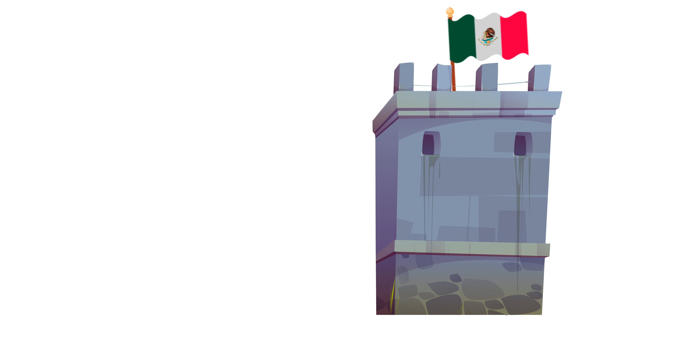
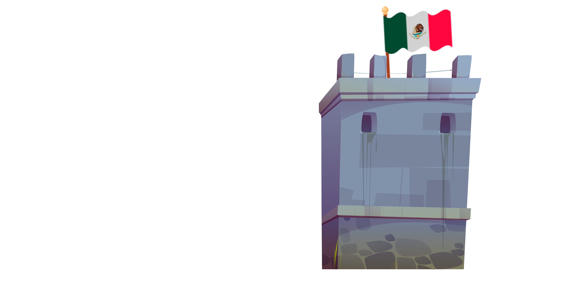
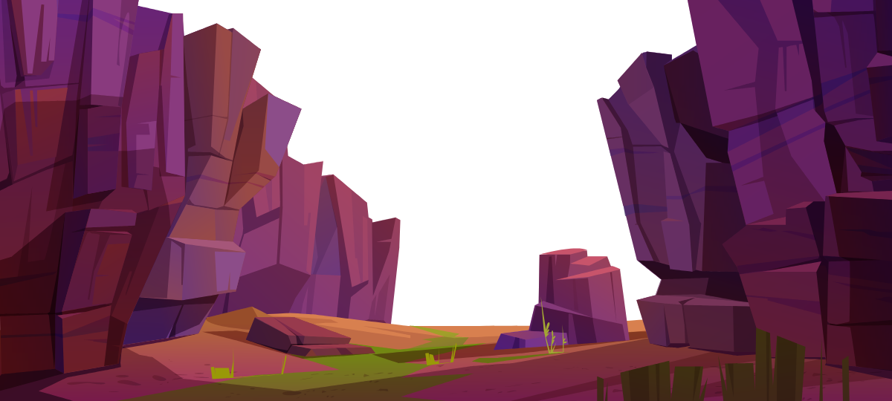
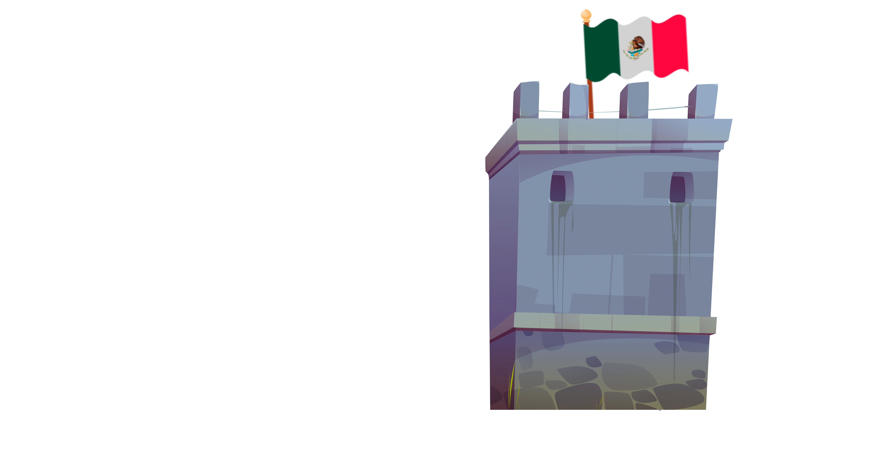
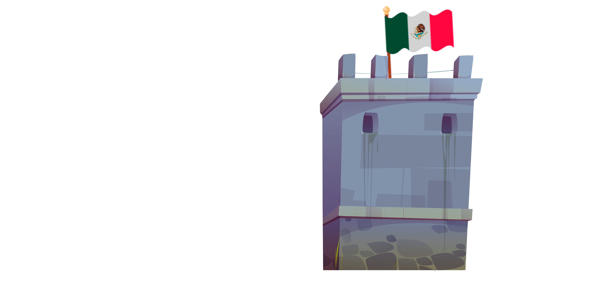

CAKE WARS
DESCUBRE MAS!  

La inspiración para desarrollar el videojuego "Cake Wars" surgió de la necesidad de crear una experiencia educativa única. La búsqueda de un evento histórico que pudiera ser tanto informativo como divertido llevó a centrarse en la intrigante "Guerra de los Pasteles" de 1838 en Veracruz, México. El mero nombre de este conflicto sugería un atractivo natural, y así comenzó el proceso creativo.
Después de seleccionar este evento histórico como punto focal, se desató una lluvia de ideas para infundir elementos divertidos y creativos en el juego. Un giro audaz fue la elección de que los personajes se lanzaran pasteles, proporcionando un toque imaginativo y alegre al relato.
Este enfoque no convencional permitió enseñar la historia de la Guerra de los Pasteles de manera accesible y entretenida.
El componente educativo de "Cake Wars" radica en su capacidad para transmitir la historia de la Guerra de los Pasteles de manera atractiva. Además, el juego incorpora elementos estratégicos característicos de los juegos de tower defense, como la construcción de barricadas, la gestión de recursos y la toma de decisiones tácticas.
En resumen, "Cake Wars" se erige como un videojuego educativo que fusiona la diversión inherente al género de estrategia tower defense con la narrativa de la Guerra de los Pasteles de 1838. Su propósito fundamental es ofrecer una experiencia lúdica y educativa, permitiendo a los jugadores sumergirse en un evento histórico fascinante y a menudo pasado por alto mientras disfrutan de un juego entretenido y desafiante.
Después de seleccionar este evento histórico como punto focal, se desató una lluvia de ideas para infundir elementos divertidos y creativos en el juego.
Un giro audaz fue la elección de que los personajes se lanzaran pasteles, proporcionando un toque imaginativo y alegre al relato.
El componente educativo de "Cake Wars" radica en su capacidad para transmitir la historia de la Guerra de los Pasteles de manera atractiva.
Además, el juego incorpora elementos estratégicos característicos de los juegos de tower defense, como la construcción de barricadas, la gestión de recursos y la toma de decisiones tácticas.